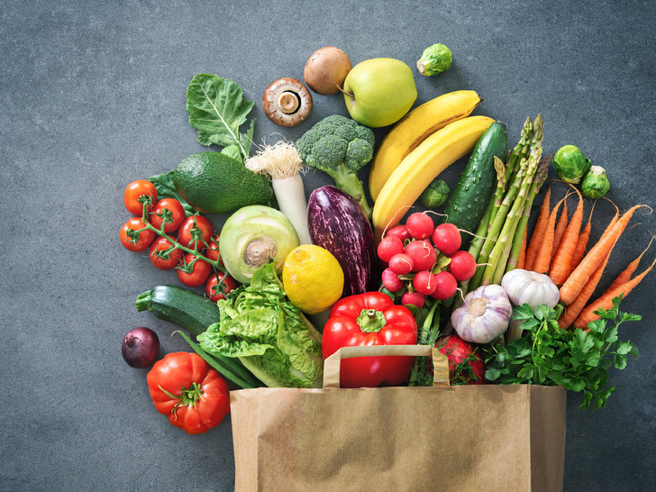

Правильное питание – залог хорошего самочувствия, здорового внешнего вида и крепкого иммунитета. Сбалансированное здоровое питание позволяет получать все необходимые минералы и микроэлементы.
Если же стоит задача снизить вес, соблюдение принципов правильного питания позволит сделать это без дискомфорта и голода. Как пищевое поведение влияет на похудение.
Для здорового снижения веса дневную калорийность достаточно снизить на 15-20% - этого вполне достаточно, чтобы постепенно терять лишние килограммы. Часто к правильному питанию относят диеты, которые предполагают снижение дневной калорийности до 1000-1200 калорий, резкое сокращение количества жиров или углеводов. Это большая ошибка! Полуголодный рацион не может быть здоровым.
Если вы никогда ранее не соблюдали принципов правильного питания, вам вряд ли удастся резко поменять образ жизни. Не торопитесь. Постепенно выработается привычка и вам станет намного проще ориентироваться в том, что и когда можно съесть.
Резкое снижение дневной нормы калорий заставляет организм работать в авральном режиме, сигнализирует о том, что еда кончилась, и, чтобы выжить, нужно экономить ресурсы. Организм при этом переходит в режим выживания – замедляет обмен веществ, сокращает расход калорий на питание мозга, а также старается запасти побольше жира. После такой диеты велик шанс набрать куда больше веса, чем было сброшено. Кроме того, голодание может нарушить важные процессы в организме и даже оказаться смертельно опасным.
Психологи утверждают, что выработать любую привычку можно за 3 недели.
Правильно выстроенный рацион – это легкость и энергия. Здоровая еда положительно воздействует на здоровье и самочувствие. Улучшается работа ЖКТ, кожа, волосы и ногти приобретают здоровый вид, уходит лишний вес. Уже через пару месяцев после перехода к здоровому питанию вы заметите результат.
И, поверьте, он стоит того!